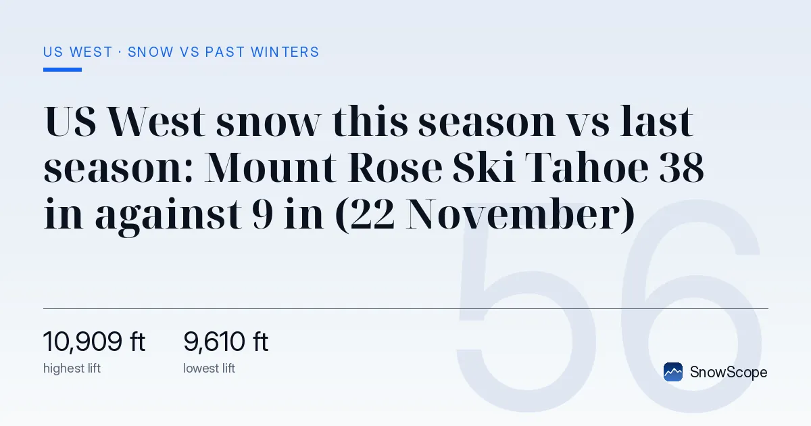

US West snow this season vs last season: Mount Rose Ski Tahoe 38 in against 9 in (22 November)
On 22 November this year, four major US West resorts all carry more snow than they did on the same date last winter. The largest jump is at Mount Rose Ski Tahoe: 38 in (97 cm) today versus 9 in (23 cm) a year ago. Early-season leads can shrink or grow; what matters is what falls next.
See the live snow forecast for Brian Head Resort in the SnowScope appSnow depth, powder alerts and the 3D map, free.
Where the gains are biggest
Mount Rose Ski Tahoe at 8,573 ft (2,613 m) shows the steepest climb: 38 in (97 cm) now against 9 in (23 cm) on 22 November last year. Brian Head Resort at 10,259 ft (3,127 m) has gained too: 41 in (103 cm) today versus 18 in (46 cm) last year on this date.
Palisades Tahoe Alpine Meadows at 7,359 ft (2,243 m) holds 30 in (77 cm), up from 6 in (15 cm) a year ago. Telluride at 10,620 ft (3,237 m) has 21 in (53 cm) compared with 7 in (17 cm) last year. All four resorts are ahead.
| Resort | Snow depth | New snow, 72 h | Coming, next days | Top |
|---|---|---|---|---|
| Brian Head Resort | 56 in (143 cm) | 5 in (12 cm) | 0 in (0 cm) | 10,909 ft (3,325 m) |
| Telluride | 50 in (128 cm) | 5 in (13 cm) | 4 in (11 cm) | 12,507 ft (3,812 m) |
| Mount Rose Ski Tahoe | 48 in (121 cm) | 3 in (8 cm) | 2 in (4 cm) | 9,567 ft (2,916 m) |
| Palisades Tahoe Alpine Meadows | 44 in (113 cm) | 4 in (10 cm) | 3 in (7 cm) | 8,494 ft (2,589 m) |

How this compares with normal for late November
For 22 November, a typical year brings much less: Brian Head Resort usually sits at 5 in (12 cm), Mount Rose Ski Tahoe at 4 in (11 cm), Palisades Tahoe Alpine Meadows at 5 in (13 cm), and Telluride at 12 in (31 cm). This year's early snow is well ahead of the average.
Brian Head Resort has built a better base than most late-November years: its peak in past winters typically arrives in early to mid-March, so more snow now does not predict a heavy season. The map shows what fell early; it does not forecast February and March.
What ground stations measured
The Brian Head station at 10,039 ft (3,060 m) measured 30 in (76 cm) on 22 November this year and 12 in (30 cm) on the same date last year. The Alta Lakes station near Telluride, at 11,289 ft (3,441 m), recorded 28 in (71 cm) today and 11 in (28 cm) last year.
Mt Rose Ski Area station at 8,809 ft (2,685 m) reported 46 in (117 cm) on 22 November this year and 17 in (43 cm) on the same date in 2025. The Ward Creek #3 station at 6,749 ft (2,057 m) near Palisades Tahoe Alpine Meadows showed 34 in (86 cm) today against just 2 in (5 cm) a year ago—a dramatic shift at that lower elevation.
How the snow built up
Mount Rose Ski Tahoe has seen the most snowfall days so far: five days with 10 cm (4 in) or more of new snow. The resort also lost some snow on one day to melt, rain or wind. Brian Head Resort had three big snow days and no major loss days. Telluride recorded only one significant snow day this month.
Early winter storms matter but do not set the season. One or two storms in October and November leave plenty of time for dry spells or thaws. The pattern from December onward will shape what skiers find in January and February.
Last winter's story at each resort
Last winter (2025-26), Mount Rose Ski Tahoe peaked at 96 in (244 cm) on 20 February. Brian Head Resort topped out at 32 in (81 cm) on 20 February. Telluride reached 30 in (76 cm) on 21 February. Palisades Tahoe Alpine Meadows hit 60 in (152 cm) on 20 February.
All four resorts finished February last year with much deeper snow than they carry now. This suggests that late fall and early winter snow often melts or blows away before the core winter months lock in the base. A strong start does not guarantee a strong finish.
What to watch next
These four resorts all began this winter ahead of last year's pace on 22 November. The map today shows only what fell in October and early November; it does not answer whether the winter will be wet or dry overall. The forecast for the next few days will reveal whether this trend holds or shifts.
Ground stations offer point measurements that can differ from the map estimate, especially at lower elevations where melt or wind can be faster. Use both the map and station data to plan your trips, and always check the official avalanche bulletin before heading off-piste.
Tips for skiers
- Early November snow often does not stick; check if thin cover hides rocks or dirt underneath, especially below 8,000 ft (2,400 m).
- Mount Rose Ski Tahoe and Palisades Tahoe Alpine Meadows are ahead of last year at their elevations; focus on upper slopes first this season.
- Station data measures one point; the map shows an area estimate at one height. Trust the station nearest your planned slope.
- An early lead in snow depth does not predict how much will fall in December or January; watch the extended forecast as much as the current map.
- Before any backcountry or off-piste descent, read the official avalanche bulletin for your area.
About these numbers
Resort snow depths are the deepest snow on the resort's upper slopes on the date shown; they are estimates for an area, not a measurement at one point. Forecasts can change. Always read the official avalanche bulletin before going off-piste.
Official avalanche bulletins: avalanche.org
Cite this report
For research, teaching or the press: the numbers and charts are free to reuse under CC BY 4.0 with this citation.
SnowScope (2026), US West snow this season vs last season: Mount Rose Ski Tahoe 38 in against 9 in (22 November), https://snowscope.app/blog/en/2026/11/us-west-snow-this-season-vs-last-season-22-november-2026.html, accessed 2026-11-22
SnowScope (Atlas Labs). (2026, November 22). US West snow this season vs last season: Mount Rose Ski Tahoe 38 in against 9 in (22 November). SnowScope snow reports. https://snowscope.app/blog/en/2026/11/us-west-snow-this-season-vs-last-season-22-november-2026.html
BibTeX
@misc{snowscope2026uswestsnowthisseasonvsla,
author = {{SnowScope (Atlas Labs)}},
title = {US West snow this season vs last season: Mount Rose Ski Tahoe 38 in against 9 in (22 November)},
year = {2026},
month = nov,
howpublished = {\url{https://snowscope.app/blog/en/2026/11/us-west-snow-this-season-vs-last-season-22-november-2026.html}},
note = {Published 2026-11-23 09:01 UTC; accessed 2026-11-22}
}· CC BY 4.0 · Methods, data and tools →
Brian Head Resort: snow and temperature by height, this winter vs last (tools) →
Follow Brian Head Resort
Free: a message when fresh snow is coming, and the forecast every morning.
More snow reports

Telluride leads the US West with 125 cm on upper slopes on 19 November. Snow spread across the region to 782,430 km².

Where should you go skiing in the US West? Three inputs, one shortlist: today's snow depth, the new snow of the last 72 hours and the forecast point …

Telluride has 39 inches today. Peak snow weeks historically arrive in late December and March, not November.